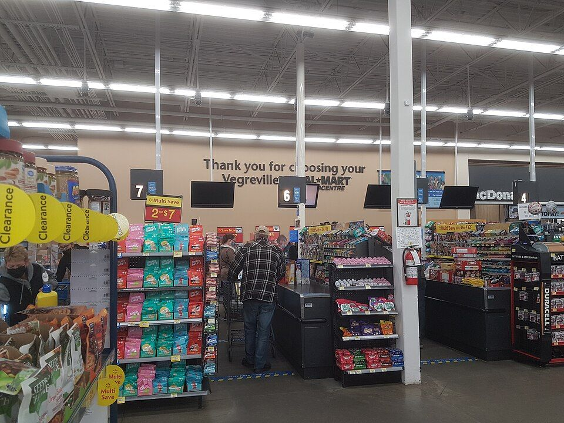

Chapter 7 · Databases
Databases: How Walmart Built a Company on the Shape of Its Own Records
Every register in ten thousand stores writes down what just happened. That is not unusual; every retailer does it. What Walmart did was decide what to record, arrange it so questions were cheap to ask, and then hand the answers to its own suppliers. This chapter is about why the arrangement matters more than the facts.
Wanna go analog?or save it as a PDF; the navigation drops out
Take the receipt from your last coffee or grocery run and count the facts on it. A store number, a date, a time, a register, a cashier. Then for every item a name, a quantity, a unit price, a line total. Then subtotal, tax, payment type, the last four digits of a card. A modest receipt easily holds thirty separate facts, and Walmart serves roughly 280 million customers a week, in its stores and online.
By the end of this chapter you should be able to:
- Explain the difference between a fact and data, what it takes for a fact to become data, and why unrecorded facts cannot be managed.
- Distinguish quantitative from qualitative data, and structured, unstructured, and semi-structured data, and say which questions each makes cheap.
- Explain why one big spreadsheet breaks, what a database and a database management system add, and how primary keys, foreign keys, and normalization split one spreadsheet into several tables.
- State the difference between operational (OLTP) and analytical use of data, and why the two are kept apart.
- Describe how Walmart turned its own data into a product for suppliers, and what that decision required of each component.
1What data actually is
Chapter 2 treated data as the raw material of information. Chapter 3 treated it as an advantage that builds up over time and that rivals cannot buy. Both chapters took the data itself for granted. This chapter does not, because before anyone can value data or compete on it, somebody has to decide what gets written down, in what form, and where it lives.
Those decisions are usually made early, by people who do not think of them as decisions. Every report, dashboard, and AI model the organization builds later inherits them. That is why "what is data, exactly?" is a management question and not a technical one. A manager who cannot answer it will approve systems that record the wrong things and then wonder why the numbers disagree. A manager who can answer it knows where to look when they do.
Notice where data sits among the five components. Data is the one component that is not bought and not built, but accumulated, one recorded fact at a time, according to rules somebody decided in advance. Hardware and software can be replaced over a weekend. The records cannot, because they are a history, and a history is the one thing money cannot buy in a hurry. That is Chapter 3's argument arriving from the other direction. Analytics and AI are things you do to data, so they inherit every decision made here.
1.1 What turns a fact into data
Start with the word fact. A fact is something that is true about the world, whether or not anyone notices it. A customer bought two coffees at 8:14 this morning. A store in Bellingham is open until ten. A rain jacket weighs 900 grams. Facts happen constantly, and most of them are never written down.
Data is a recorded representation of a fact: a number, a piece of text, a date, a true/false flag, an image, a sound. Two properties turn a fact into data, and the rest of this chapter follows from them.
First, data is recorded. A fact that no system wrote down produces no data, no matter how real it was. Here is an example. A customer comes in for a medium rain jacket, finds the rack empty, and leaves. That lost sale really happened. But the register records sales, not requests, so the lost sale leaves no trace. A report on jacket demand will show only the jackets that were in stock to be sold, so it will understate demand exactly where the shortage was worst. What a system does not record, nobody can manage.
Second, data has a type. The type tells a system what kind of value it is holding, usually a number, text, a date, or true/false, and the type decides what the system will do with it. The same marks on a screen mean different things depending on their type. Here is an example. The ZIP code 02134 stored as a number becomes 2134, because numbers do not have leading zeros, and a Boston address now points nowhere. A more expensive example comes from genetics. Spreadsheet software reads the gene name MARCH1 as the date March 1 and quietly converts it. That conversion damaged so many research files that in 2020 the committee that names human genes renamed 27 of them, so MARCH1 became MARCHF1. Most data disasters begin with a type being wrong, and the software almost never says so.
1.2 Kinds of data: quantitative and qualitative
Once a fact is recorded, the next question is what kind of value it is. There are two kinds, and they support completely different operations.
Quantitative data is numeric data you can do arithmetic on. You can add it, average it, and ask which value is bigger. Quantities, prices, temperatures, and durations are quantitative. For example, on a grocery receipt the quantity (2) and the unit price ($4.99) are quantitative, and multiplying them gives the line total.
Qualitative data describes a quality or a category. You cannot do arithmetic on it, but you can group, count, and filter by it. Product names, store names, payment types, colors, and customer complaints are qualitative. On the same receipt, the product name (oat milk) and the payment type (debit card) are qualitative. Nobody adds two payment types together, but you can count how many sales used each one.
In the Cascadia workbook, revenue is quantitative and store name is qualitative, which is why a pivot table treats them so differently: you sum one and group by the other.
The tricky case is a number that is not quantitative. A ZIP code, a store number, a phone number, and a student ID are all written in digits, but adding two of them produces nonsense. They are labels that happen to use numbers. Store one as a number and the software will happily total your ZIP codes. This is where the two properties in 1.1 meet: what kind of value something is decides which type it should be given.
1.3 How data is organized: structured, unstructured, and semi-structured
Quantitative and qualitative describe a single value. Structure describes how many values are organized together, which this book calls the data's shape. These are two different questions, and a manager needs both.
Structured data fits a fixed grid of rows and columns, where every row has the same fields and every field has a type. Sales transactions, inventory counts, and an employee roster are structured. For example, every row in a sales table has a date, a store, a product, a quantity, and a price, in the same order. Structured data usually mixes both kinds of value: quantity and price are quantitative, while store and product are qualitative. It is the easiest data to ask questions of, and it is the kind databases were invented for.
Unstructured data has no fixed grid. Emails, product reviews, photos, call recordings, and social media posts are unstructured. For example, a review might say "Waited 40 minutes at pickup and the bag was missing an item." Unstructured data is mostly qualitative, and any numbers inside it are trapped. That review contains a quantity, 40 minutes, but you cannot average it across ten thousand reviews until something pulls it out and gives it a field of its own. Unstructured data is most of the data in the world by volume. It was historically the hardest to use, and modern AI matters to business largely because it made this kind usable.
Semi-structured data sits between the two. It has labels, but not a rigid grid. For example, a website might save each online order as a labeled file. Every order has an order number and a list of items. But one order also has a delivery note and a gift message, and the next has neither. The labels let software find things. The variation means no single table fits every record.
Much of the work in a data-driven organization is moving facts in one direction: from unstructured, to labeled, to fully structured. Structure is what makes questions cheap to ask.
Five things a business might store. Decide what shape each one has before you check.
Ask whether every item has the same fields. If yes, it is structured. If it is free text or an image, unstructured. If it has tags but the tags vary from item to item, semi-structured.
1.4 Structured data: records, fields, and why format matters
Structured data has a standard anatomy, and you need three words for it, because you will use them in every lab from here on. A record is one complete bundle of facts about one thing: one sale, one member, one product. A field is one attribute inside it: the date, the quantity, the price. In a table, records are rows and fields are columns. The third word is format, the exact way a value is written: $18.00 or 18, "2025-03-03" or "3/3/25". This vocabulary sounds trivial until you watch it fail.
Lab 7's RAW export shows what failure looks like. Prices are stored as text with dollar signs, so they will not sum. Quantities are blank instead of zero, which is not the same thing. And Washington is spelled fourteen different ways, so groups that should merge stay split. Every one of those is a format problem: the fact was fine, and the representation was wrong. "March 3, 2025," "3/3/25," and "2025-03-03" are one fact wearing three costumes. Software matches representations rather than facts, so it treats them as three different days.
A database prevents most of this by enforcing rules at the moment data is written. A column declared as a date refuses "March-ish," and a column declared as a number refuses "$18.00." The mess in the RAW export exists because the data was born in a system without rules. The next two sections explain why that matters as the data grows, and what a system with rules looks like.
2Why one big spreadsheet breaks
So far the data in this chapter has been one fact at a time, or a single list of facts. The natural next step is to put everything in one big spreadsheet. Every sale gets its own row, and the store's name, address, and phone number and the product's name, price, and supplier are repeated on every row. For a few hundred rows that works, and everyone in this course has built one. Then it breaks, in three ways that have textbook names and one that does not.
First, here is why this is a management topic and not a technical one. The way data is organized decides which questions are cheap to ask and which are effectively impossible, and nobody downstream can undo it. An analyst with badly organized data cannot analyze their way out of it, and neither can a machine learning model. In five-component terms, a bad data design makes data the weakest component, and the weakest component rule from Chapter 1 says the whole system is then limited by it, however good the rest is.
2.1 The three ways one big spreadsheet breaks
Database designers call these failures anomalies, meaning places where the data can end up contradicting itself. First, update anomalies: the Bellingham store's phone number lives on every one of its thousands of sale rows, so changing it means changing it thousands of times, and missing one means the spreadsheet now disagrees with itself. Second, insertion anomalies: you cannot record a brand-new product until it has sold at least once, because product facts only live inside sale rows. Third, deletion anomalies: delete a store's only sale and you have also deleted everything you knew about the store. The single spreadsheet ties together facts that have different lifetimes, and those ties turn into errors.
2.2 The fourth problem: size, sharing, and no rules
The fourth problem has no textbook name because it is physical. A spreadsheet is built to be edited by one person, or a few, at a time, and a modern Excel sheet stops at about a million rows. A large retailer's registers write new rows every second, from thousands of locations at once. And a spreadsheet will accept anything in any cell. It has no way to insist that a price is a number or that a sale belongs to a store that exists. When the data is small and one careful person owns it, that freedom is convenient. When the data is large and many people depend on it, that freedom is how errors get in.
3Beyond the spreadsheet: databases
A database is an organized collection of related data, stored so that many people and programs can use it at once, under rules about what the data may contain. The software that stores the data, enforces the rules, and answers questions is called a database management system, or DBMS. Oracle, Microsoft SQL Server, PostgreSQL, and SQLite, which runs the Cascadia database, are all database management systems. Most of them answer questions written in SQL, short for Structured Query Language, which you will write in Lab 7.
What makes a database different from a big spreadsheet is not mainly its size. It is the rules. A database knows that a column holds dates, so it refuses "March-ish." It knows that a sale must belong to a store that exists, so it refuses a sale for a store it has never heard of. And when it cannot store something, it says so instead of dropping it quietly. Most business databases organize their rules around one design, the relational model.
3.1 Tables and keys: the relational database
The whole idea fits in one sentence: store each fact in exactly one place. In the big spreadsheet, the Bellingham store's phone number is written on every row that mentions Bellingham. In a relational database it is written once, and every sale points to it. The figure shows the move.
A relational database stores each kind of thing in its own table: one table for stores, one for products, one for sales. A table looks like a sheet in a spreadsheet, but it holds only one kind of thing. Every row is a record of that one thing, and every column is a field. For example, the stores table has one row per store, with columns for the store's id, name, city, and phone number.
The tables are connected by keys. A primary key is a field whose value identifies exactly one record in its table and never repeats. For example, store_id 12 means the Bellingham store and nothing else. Even if two stores were both named "Downtown," their ids would still tell them apart. A foreign key is a field in one table that holds the primary key of a record in another table. For example, each row in the sales table carries a store_id and a product_id. The sale row does not repeat the store's phone number or the product's supplier. It holds two small numbers that point to where those facts live.
Asking a question across tables by matching keys is called a join. For example, to list every sale with the store's city beside it, the database matches each sale's store_id to the row in the stores table with the same store_id, and reads the city from there. The join is the move that makes the whole model work: facts stored once, combined whenever someone asks.
Run a receipt through that model and the one big spreadsheet becomes three tables. The sales table has thin rows: date, store_id, product_id, quantity, and price. The stores table has one row per store, with the phone number stored exactly once. The products table has one row per product, with its category and supplier. Each fact now lives in one place, updates happen once, and a new product can exist before it sells. The spreadsheet's three anomalies are not patched. They become impossible to express.
This is not an abstraction you have to take on faith, because you will build it yourself. The join builder lets you draw these key connections against the real Cascadia database, and Lab 7's final checkpoints, finding a supplier's products and a store's real problem, are joins you will write yourself.
3.2 Normalization
Splitting one big spreadsheet into tables so that each fact lives in exactly one place has a name: normalization. It is less a technique than a habit of mind, and its working rule is short. Every field in a table should describe the thing that the table's primary key identifies, and nothing else. A store's phone number describes the store, so it belongs in the stores table and nowhere else. Normalize well and consistency stops being something people have to remember. It becomes something the structure guarantees.
Normalization has formal levels, called normal forms, that a database course will drill. For this course the instinct matters more than the formal rules: if the same fact appears twice, the design is probably wrong. The word "fact" is doing careful work in that sentence, and the toy below is built around the place where people get it wrong.
Every field starts where it sits in one big spreadsheet: in the sales table. Move each one to the table it describes, then run the five tests. Before you run them, predict which test you expect to fail last.
When all five pass, paste your three tables into an AI model and ask it to find one fact you have still stored in the wrong place, and to argue for its answer. Then decide whether it is right.
Normalization has a cost, and it is worth naming. A perfectly normalized database scatters a simple question across many tables, so answering "revenue by state last October" means joining sales to stores to a calendar. That is why analysts often build deliberately flattened copies of the data for reporting, accepting some repetition in exchange for fast questions. The right design depends on the purpose, which leads to the next distinction: one shape for running the business, another for understanding it.
3.3 Running the business and understanding it: OLTP and analytics
Two very different jobs use the same data. The first job is recording what happens. An operational system, formally called OLTP (online transaction processing), records events as they happen: a register writing sale rows, a website placing orders, a warehouse confirming a delivery. It handles millions of tiny writes, and it must never lose one. For example, when you tap your card at a register, an OLTP system writes your sale in a fraction of a second and moves on to the next customer.
The second job is understanding what happened. An analytical system, sometimes called OLAP (online analytical processing), reads huge sweeps of history to answer questions such as revenue by region by month, or which stores sell the most rain jackets per customer. For example, a regional manager asking how last winter compared with the winter before needs two years of sales at once, not the latest one.
The two jobs pull the design in opposite directions, so companies usually keep them apart. They copy data from the operational system into a separate data warehouse, a store of historical data shaped for analytical questions. That way a query scanning two years of sales never slows down the registers recording today's. When you pivot in Excel, chart in Tableau, or write a GROUP BY in SQL, you are doing analytics. The database underneath did the transaction processing first.
3.4 Where database tables came from, and the decade nobody wanted them
The relational model is so standard now that it looks like a discovery about the nature of information rather than somebody's idea. It was somebody's idea, and for years it was resisted by the company best placed to build it.
In June 1970, Edgar Codd, a mathematician at IBM's research laboratory in San Jose, published a paper called "A Relational Model of Data for Large Shared Data Banks." Its argument was that data should be stored as simple tables of rows and columns, related to each other by values, and that programs asking questions should not have to know how any of it was physically stored. You should be able to describe what you want rather than how to go and get it.
At the time, databases worked the other way around. A programmer reached data by following links through a hierarchy, which meant every question had to be written against the storage layout, and changing the layout broke the programs. IBM sold a very successful product built exactly that way. Its own research division had just published a paper arguing that the approach was wrong.
IBM did eventually build a relational system. Its research project, System R, produced the query language that became SQL, the one you will write in Lab 7. But the company was slow to turn that research into a product. A small company founded by Larry Ellison read the published research, took it seriously, and got a relational database to market first. That company was later renamed Oracle. IBM's flagship relational product, DB2, did not ship until 1983, thirteen years after Codd's paper. IBM had the paper, the researchers, the customers, and the money, and still arrived late, because it already sold something the paper argued against.
There are two things worth taking from that story. The first is that the design you are learning as obvious was argued for, against opposition, by a named person, within living memory. The second is a pattern you will meet again in this book and in your career. The organization with the most to gain from an idea is often the one with the most to lose from it, and being right early is worth nothing by itself.
4Mini-cases: two failures of shape
Before the main case, here are two short mini-cases. In each one the facts existed, somebody needed an answer from them, and the answer was blocked by the shape of the data, meaning how it was structured and stored, rather than by the facts themselves. The two are separated by 130 years, which is the point. This is not a modern problem, and it did not stop being a problem when computers got fast.
4.1 Mini-case 1 · 1890: the census that might not have finished in time
The United States Constitution requires a population count every ten years, and by the 1880s the counting had stopped working. The 1880 census was recorded on paper schedules and tallied by hand by hundreds of clerks, and the full tabulation took about seven years. The population was growing faster than the clerks could count it. Officials worried that the 1890 census, counted the same way, might not be finished before the 1900 census began.
Herman Hollerith, who had worked on the 1880 count, proposed something that sounds obvious now and was not. Give every person a card, and give the card a fixed set of positions, where a hole in a particular place means a particular fact. Sex here. Age there. Occupation there. A machine passes pins through the card, the holes complete electrical circuits, and counters advance.

Engraving, Scientific American, August 1890. Public domain, via Wikimedia Commons.
Look at what Hollerith's card actually is, in this chapter's terms. One card is a record. Each position on it is a field. Every card carries the same fields in the same order, which is what lets a machine handle them at all. Hollerith invented the row of a table decades before there was a computer to put it in.
The Census Bureau ran a competition in 1888 to decide who got the contract. Capturing the test data took the two other entrants 144.5 and 100.5 hours; it took Hollerith 72.5. Preparing that data for tabulation took them 44.5 and 55.5 hours; it took Hollerith 5.5. The gap on the second task is roughly tenfold, and the second task is the one this chapter is about, because it is not recording facts, it is getting answers out of them. A rough national count for 1890 came back in about six weeks. The company Hollerith founded eventually became part of IBM.
What the data's shape decided: whether the question could be answered at all. The component: data, at the level of the field. The 1880 data was not wrong. It was unstructured, and an unstructured fact is one that a person has to read.
Show the answer
The facts did not change; the shape did. In 1880 each answer was a mark on a paper schedule, readable by a person and countable only by a person. In 1890 each answer became a hole in a fixed position on a card: a field, with a type, in a record. That is the change. Once a fact has a position, a machine can find it, and once every record has the same positions, the machine can count across millions of them. Every database in this chapter is Hollerith's card with the paper removed.
4.2 Mini-case 2 · 2020: the rows that fell off the bottom
During the pandemic, positive coronavirus test results in England traveled from testing laboratories to the contact tracing service through Public Health England (PHE). The laboratories sent results as text files. An automatic process at PHE pulled those files into Excel templates, which were then uploaded to the system the contact tracers used.
The process used the old .xls file format, which has a hard limit of 65,536 rows. Each test result took up several rows, so in practice each template could hold only about 1,400 cases. When a file reached the limit, the additional rows were not rejected with an error. They were silently left out.
Between 25 September and 2 October 2020, 15,841 positive cases were not passed to contact tracers on time. The people who tested positive were told. Their contacts were not, and referrals to contact tracing were delayed by up to a week, during a fast-growing second wave. Reporting at the time put the number of close contacts who were not reached near 48,000. A later study by two economists estimated that the delay was associated with more than a hundred thousand additional infections. Treat that figure as an estimate rather than a count, because it is modeled rather than observed.
This is section 2's argument about the single spreadsheet, played out at national scale, in a week. A spreadsheet is one big table. It has a row limit, no rules about what a column may contain, no way to enforce that a result belongs to a person, and, most important here, no obligation to complain when it drops something. A database would have stored the row or refused it and said so.
What the container decided: whether anyone found out. The component: software. The failure was not that data was lost. It was that data was lost quietly, and a tool with rules is a tool that objects.
Show the answer
First, a database enforces rules: a column has a type, a key must be unique, and a sale must point to a store that exists, so bad values are refused when they are written. Second, a database reports what it cannot do. When a write fails, it returns an error instead of quietly dropping the row, which is exactly what the .xls file did not do. Databases also let many people work at once and hold far more rows, which also counts. A spreadsheet is still the right choice for a small amount of data that one person owns and reads, such as a budget, a quick analysis, or a list of a few hundred items. Public Health England's mistake was not using a spreadsheet. It was using one for a national count that grew every day.
4.3 What the two have in common
Put the two mini-cases side by side. In 1890 the facts had no structure, so no one could count them. In 2020 the facts were put in the wrong container for their volume, and it failed without saying so. Different centuries, different technologies, one finding: the facts were never the problem.
There is a second thing the two share, and it matters more for your career than the first. In both cases the decision that caused the failure was made by a person, early, for a reason that was sound at the time, and it was made long before anyone could see the consequence. Somebody chose the fields. Somebody chose the file format. Those are not technical decisions that happen to have management consequences. They are management decisions that happen to be expressed in technology, and the chapter you are reading is about how to make them well.
5Main case · Walmart: a company built on a database
Imagine being a supplier in the early 1990s and being given access to a new system. Behind it is what sold, of your products, in every Walmart store, yesterday. Almost no retailer shared that kind of data with suppliers at the time, and Walmart provided it free. Walmart's founding advantages were about trucks and locations. Its modern advantage was built on the ideas in this chapter, and the pivotal move was one most companies would have considered unthinkable: it gave its data away.
Four numbers set the scale of what that decision produced:

Photograph: Rowanswiki, via Wikimedia Commons, CC0 (public domain dedication).
5.1 Giving the data away: Retail Link
Start with the decision to share sales data with suppliers. In the early 1990s Walmart introduced Retail Link, a system that shares Walmart's own point-of-sale data with its suppliers. A supplier like Procter & Gamble can see how its products are selling, store by store, day by day, and manage its own inventory against real demand instead of guesses. Every supply chain suffers from the bullwhip effect: demand distortion that grows larger at each step up the chain, because each company guesses at what the next one will need and adds a margin for safety. Retail Link attacks the bullwhip at the root by replacing the guesses with shared records. Suppliers plan against actual sales, Walmart's shelves stay stocked without warehouses of padding, and the whole chain runs on one version of the truth.
Whether giving away your most valuable data is genius or madness is an open question, and worth arguing from both sides. What is not in question is the scale of what grew from it. By 2017 Walmart's analytics hub, the Data Café, drew on more than 200 streams of internal and external data, including transactions, weather, and social media, and was reported to be processing about 2.5 petabytes of data an hour. Walmart said the hub had cut the time to analyze a problem from about two and a half weeks to about 30 minutes. Those numbers are nearly a decade old and certainly bigger now; the design principle has not changed: every register is a sensor, and the database is the instrument the whole company reads.
One story from the Data Café makes the point better than the petabytes do. A grocery team watched sales in one product category decline and could not explain it. Working through the Data Café's data, the team found a pricing error: products were priced too high in some regions. The fix was simple once someone could see the problem. Walmart's own reason for wanting speed was lost sales. An answer that arrives weeks late arrives after the customers have already shopped somewhere else. That is Chapter 2's timeliness dimension, operating at Walmart scale: the same information, weeks late, is worth a fraction as much.
5.2 From records to answers: analytics at Walmart
Section 3.3 drew a line between systems that record the business and systems that help people understand it. Walmart's history follows that line. The registers in every store are the operational side: they write each sale the moment it happens. Retail Link's reports and the Data Café are the analytical side: they read years of those sales to answer questions. Keeping the two apart is why a supplier's heavy report never slows down a checkout lane.
This is also where the remaining four components arrive. A normalized database is useless sitting still. The networks carry every register's writes to the center and carry Retail Link's answers back out to thousands of suppliers. The people are the ones who think of the question. The Data Café did not notice the pricing error. A grocery team did, and then had somewhere to look.
Seen through this lens, the labs in this course are one continuous story. Business intelligence asks what to measure; this chapter supplies the machinery those measurements come from. Your Tableau dashboard and your SQL queries are analytics running on structured, normalized, joined data, and the reason your questions are cheap to ask is that someone designed the tables so they would be. Analytics is not a separate world from databases. It is what databases are for.
5.3 What's next: where this has gone since
Retail Link has run for about three decades and still does, as the portal suppliers sign in through. What Walmart retired was the reporting inside it. In October 2023 Walmart told suppliers it was phasing out the Decision Support System inside Retail Link, which it shut off on 1 March 2024, and moved supplier reporting onto a newer platform. That platform launched in September 2021 as Walmart Luminate and was renamed Scintilla in 2025. It is run by Walmart Data Ventures, a division created in February 2021. The name changes are not the interesting part. Three things about the move are.
First, the data became a business. In the early 1990s sharing point-of-sale records was a supply-chain decision that happened to involve data. There is now a division whose job is to create value from Walmart's records. A basic tier of Scintilla is free, and the fuller tier is a paid subscription. Chapter 3 argued that accumulated data is the component nobody can buy. Walmart's answer, three decades later, is to sell carefully chosen views of it while keeping the accumulation.
Second, the question a supplier asks changed from "how did I do" to "what should I do." That is how the head of Walmart Data Ventures described the change in 2024. The old reports showed what had happened. The new platform adds recommendations. In late 2025 Walmart announced AI tools on top: a conversational tool to help suppliers understand the data, automatic summaries of customer survey results, and suggested marketing actions. That is Chapter 2's progression from data to information to knowledge, happening in public. None of those tools would have anything to work with if somebody had not decided, decades ago, what to record.
Third, the scope widened. The platform now covers how customers shop and what they say in surveys, not just what moved off a shelf. It launched in Mexico and Canada in 2024, and in 2026 Walmart announced it would extend Scintilla to Sam's Club.
Hold all of that beside section 6 before you decide how you feel about it. The same joins that let a supplier see which stores are underperforming let somebody infer what a household is going through. The capability is identical; only the question differs. And notice that nothing in this subsection required a new invention. It required three decades of somebody deciding, correctly, what was worth writing down.
5.4 The five components at Walmart
Now that you have seen the whole system, here it is as five components, the way this course maps every case. Look at which row the advantage lives in, and notice that it is the row Walmart chose to give away.
| Component | At Walmart | What breaks if it fails |
|---|---|---|
| Hardware | Registers and scanners in ~10,900 stores; the servers behind the Data Café | A store goes dark: no sales recorded, shelves restocked on guesswork |
| Software | The transaction systems, Retail Link, Scintilla, the analytics platforms | Suppliers plan against stale numbers; the bullwhip returns |
| Data | Structured transaction records from every register, plus 200+ outside data streams | A type error or bad key spreads into every report downstream |
| Networks | Every register sending to the center; Retail Link reaching thousands of suppliers | The shared version of the truth stops being shared |
| People | Analysts in the Data Café; the grocery team that chased the decline; suppliers reading the reports | Data nobody investigates is a cost, not an asset: the pricing error runs for months |
5.5 What a business technology manager takes from this chapter
Strip the Walmart case down to what you can reuse in any company. Four decisions came up in it, and each one is a decision you will be in the room for.
Decide the shape of the data before you decide anything else. A fact recorded as a field with a type can be counted, joined, and questioned; the same fact typed into a note cannot. Hollerith's census and Public Health England's spreadsheet failed for the same reason at opposite ends of history: the facts existed and the container was wrong. When somebody proposes to collect something, ask what the record will look like, because that decides which questions will be cheap for the next twenty years.
Put each fact in one place, and connect the places with keys. One big spreadsheet corrupts itself in three predictable ways, and the relational model exists to stop that. You will not design databases for a living, but you will approve them. The question to ask is whether the same fact is stored twice anywhere. If it is, the two copies will eventually disagree, and nobody will know which is right.
Sharing data can be worth more than hoarding it. Walmart's most valuable move was handing suppliers access to their own sales data, which almost no retailer did at the time. The information was worth more in the suppliers' hands than locked in Bentonville, because the suppliers used it to stop guessing. Before you treat data as a secret, ask who could make a better decision with it and what that decision would be worth to you.
Remember that the shape is a management decision, not a technical one. Somebody chose the fields. Somebody chose the file format. Those choices were made early, for reasons that were sound at the time, by people who could not see the consequence, and every one of them is the kind of choice a manager signs off on. Chapter 6 was about what analytics does with data, and Chapter 12 will do the same for AI; none of it works if the decisions in this chapter were made badly.
6The downside: what the basket reveals
A store's transaction database looks like the least sensitive data imaginable: no health records, no messages, just groceries. The discomfort arrives when you understand what joins and history do to innocent-looking records.
A single basket says little. A year of baskets, linked to one customer, says a great deal: a household's size, schedule, budget, and diet, and sometimes its religion by what is never bought or its health by what suddenly is. Retail analytics openly works this way, and the industry's most famous cautionary tale is about exactly this. In 2012 the New York Times reported that Target's statisticians had built a model that guessed, from purchases like unscented lotion and supplements, which shoppers were pregnant, so the company could send them baby coupons. According to the Times, a father near Minneapolis complained to a store manager that his teenage daughter was receiving them, and later learned she was pregnant. Nothing in that story required surveillance in the spy-movie sense. It required exactly what this chapter teaches: clean records, a stable key per customer, and a join across time.
Walmart's version of this question is current, not historical. Scintilla lets brands aim ads at groups of Walmart shoppers. In 2025 the head of Walmart Data Ventures gave an example of how the targeting works: a brand could aim a health product at customers who had shopped for natural or gluten-free foods. In December 2024 Walmart also completed its $2.3 billion purchase of the TV maker Vizio, saying the deal would help advertisers reach customers through Walmart Connect, its advertising business. A smart TV records what a household watches. In 2017, years before Walmart owned it, Vizio paid $2.2 million to settle charges from the Federal Trade Commission and New Jersey that it had collected viewing data from 11 million TVs without viewers' consent.
None of this shows that Walmart has done anything wrong, and this chapter takes no side on whether advertising built on purchase data is good or bad for shoppers. The systems question is the one this chapter can answer. Once viewing records and purchase records can be matched to the same household, what can the join reveal, and who decides which joins are allowed?
The lesson of this section is not that databases are sinister. It is that the power to join is the power to reveal, and the same design choices that make honest questions cheap make invasive ones cheap too. A company that holds well-structured data about people holds a capability, and somebody has to decide who may use it, for what, and what happens when it leaks. The second question of this course, what does the system make easier, and for whom, applies to a database design as much as to an algorithm.
- A fact becomes data only when it is recorded and given a type. What nobody records, nobody can manage, and a wrong type corrupts data quietly.
- Data is not collected, it is designed. The shape you record facts in decides which questions are cheap, which contradictions are possible, and who can answer without asking you.
- One big spreadsheet works for a few hundred rows and breaks at scale, because every repeated fact is a place for two copies to disagree. Normalization puts each fact in exactly one place, and keys connect the places.
- A key is a promise: this value identifies exactly one thing. Most data failures in this chapter were broken promises about keys and formats, not broken software.
- Registers write data; analysts read a copy of it. Keeping the two apart is why a heavy query never slows a sale.
- Walmart's data became a business because a supplier could answer its own questions from Walmart's records without asking anyone. The data component carried the load; the other four made it deliverable.
7Vocabulary
- Fact
- Something true about the world, whether or not anyone records it.
- Data
- A recorded representation of a fact, with a type.
- Quantitative / qualitative
- Numeric data you can do math on; descriptive data you group by.
- Structured data
- Facts in a fixed grid of typed fields; what databases were built for.
- Unstructured data
- Text, images, audio: no fixed grid; most of the world's data.
- Semi-structured data
- Labeled data whose labels vary from record to record.
- Record / field
- One complete fact-bundle; one attribute within it.
- Database
- An organized collection of related data, shared by many users, with rules about what it may contain.
- Database management system (DBMS)
- The software that stores a database, enforces its rules, and answers questions.
- Table
- A grid of records about one kind of thing, one record per row.
- Primary key
- The field that uniquely identifies each record in a table.
- Foreign key
- A field holding another table's primary key; how tables connect.
- Join
- Answering a question across tables by matching keys.
- Normalization
- Designing tables so every fact is stored exactly once.
- Update / insertion / deletion anomaly
- The three ways one big spreadsheet contradicts itself.
- OLTP
- Systems that record events as they happen; many tiny writes.
- OLAP / analytical system
- Systems that read large amounts of history to answer questions.
- Data warehouse
- A copy of operational data shaped for analytical questions.
- Analytics
- Asking recorded facts questions; what databases are for.
8Discussion questions
None of these get handed in. On Wednesday you run the discussion and I steer it, which means the class is only as good as what you walk in with. Read the chapter, pick the question you have the strongest opinion about, and be ready to say it first.
- Take a receipt from your own wallet or phone and design the tables. What belongs in the sales table, what belongs somewhere else keyed by an id, and which fact on the receipt is hardest to place? Defend that last one. Apply
- Explain to someone who has never used a database why storing a store's phone number on every sale row eventually produces a spreadsheet that disagrees with itself. Then explain what the relational model does about it, without using the word normalization. Analyze
- Retail Link gives Walmart's demand data to its suppliers. Chapter 3 argued that advantage comes from what rivals cannot copy, and Walmart handed its most valuable records away, yet the advantage held for three decades. What exactly did the suppliers get, what did they still not have, and which of the five components was the part nobody could take? Systems
- The Data Café found a pricing error in minutes that had been costing sales for a while before that. List everything that had to already exist, across all five components, for that question to be answerable quickly, and name the one component whose absence would have hidden the problem longest. Apply
- Section 6 claims the power to join is the power to reveal. Construct a concrete example: two harmless-looking tables that, joined on a shared key, produce something a person would not want known. Then say who inside a company should have to approve that join, and what they would need to know to decide. Ethics
9From lecture to lab
Monday covered what data is, why one big spreadsheet breaks, and how a database's tables and keys replace it. Wednesday is Walmart, and Chapter 8's Nike case runs the same week.
This week's lab, Lab 7: SQL Fundamentals, is this chapter with your hands on it. The Cascadia database has the tables this chapter describes, with the keys this chapter defines, and the joins you write are the operation that makes the relational model worth having. The final checkpoints, finding a supplier's products and finding one store's real problem, are questions that would be impossible in one big spreadsheet and are three lines of SQL against a normalized database.
Go to Lab 7 →10Sources and further reading
- Walmart Inc., Form 10-K for fiscal 2026 (filed 2026), Item 1, for the roughly 280 million customers served each week and the more than 10,900 stores in 19 countries. The same figures appear in Walmart's 2026 annual report release, 23 April 2026.
- Kim Souza, "Wal-Mart works to use big data to improve checkout process, manage supply chain," Talk Business & Politics, 10 August 2017, for the Data Café (Collaborative Analytics Facilities for Enterprise), its 200+ data streams, the 2.5 petabytes an hour, the cut in analysis time from 2.5 weeks to about 30 minutes, and the grocery pricing story. The article draws on a Walmart blog post from the same week.
- For Retail Link's origins: "The Second Wave of Retail Data-Sharing: Everyone Wins," in SupplyChainBrain, notes that Walmart introduced the system in the early 1990s and provided the data free of charge. Accounts disagree on the exact launch year, so this chapter says "early 1990s."
- "Walmart requiring all suppliers to move to Luminate data service," Talk Business & Politics, October 2023, for the phase-out of the Decision Support System inside Retail Link as of 1 March 2024, and the free Basic and paid Charter tiers.
- Walmart Data Ventures, "Introducing Scintilla" (2025), the company's own timeline: Walmart Data Ventures formed February 2021, Walmart Luminate launched September 2021, launches in Mexico and Canada in 2024, renamed Scintilla in 2025.
- "How Walmart's Data Insights are Helping its Suppliers," Retail TouchPoints, 3 October 2024, for the rename and for Mark Hardy's description of the shift from "how did I do" to "what should I do."
- Mitchell Parton, "Walmart develops AI tools to help suppliers better understand customer data," Modern Retail, 29 October 2025, for the conversational tool, the AI survey summaries, the marketing recommendations, and Hardy's example of targeting customers who shopped for natural or gluten-free foods (section 6). And "Walmart extends Scintilla data platform to Sam's Club," Modern Retail, August 2026.
- Walmart, "Walmart Completes Acquisition of VIZIO," 3 December 2024, for the acquisition and its link to Walmart Connect. The $2.3 billion price is reported in Talk Business & Politics, December 2024.
- Federal Trade Commission, "VIZIO to Pay $2.2 Million to FTC, State of New Jersey to Settle Charges It Collected Viewing Histories on 11 Million Smart Televisions without Users' Consent," February 2017.
- Charles Duhigg, "How Companies Learn Your Secrets," The New York Times Magazine, 16 February 2012, for the Target pregnancy-prediction story in section 6. The father's story is as the Times reported it.
- Edgar F. Codd, "A Relational Model of Data for Large Shared Data Banks," Communications of the ACM 13(6), June 1970, pages 377 to 387. The paper that defined the model this chapter teaches. Eleven pages, and readable if you skip the algebra.
- IBM, "The relational database," IBM's own history of Codd's work, System R, and the commercial race, including Oracle reaching the market first and DB2 shipping in 1983.
- U.S. Census Bureau, "The Hollerith Machine," for the 1888 competition timings. The roughly seven-year tabulation of 1880 and the six-week rough count for 1890 are from "How Herman Hollerith Counted America and the World," American Scientist, November to December 2023.
- Leo Kelion, "Excel: Why using Microsoft's tool caused Covid-19 results to be lost," BBC News, 5 October 2020, for the automatic process that loaded lab files into Excel templates, the old .xls format and its row limit, and each result taking several rows, so each template held about 1,400 cases. The Register, 5 October 2020, for Public Health England's statement on the 15,841 cases and the estimate of up to 48,000 untraced contacts.
- Thiemo Fetzer and Thomas Graeber, "Measuring the scientific effectiveness of contact tracing: Evidence from a natural experiment," Proceedings of the National Academy of Sciences 118(33), 2021. Their earlier working paper gives the estimate of more than 125,000 additional infections. These are modeled estimates, not counts.
- "Scientists rename human genes to stop Microsoft Excel from misreading them as dates," The Verge, 6 August 2020, for the 27 renamed genes and MARCH1 becoming MARCHF1 (section 1.1).
- Images. The 1890 census engraving is from Scientific American, August 1890, public domain, via Wikimedia Commons. The Vegreville checkout photograph is by Rowanswiki, CC0, via Wikimedia Commons.
- Verification note. Checked against sources in October 2026. Corrected in this pass: Retail Link's launch is now "early 1990s" rather than 1991, because sources disagree on the year; the claim that no retailer had shared such data is softened to "almost no retailer"; Codd's paper is eleven pages, not six; the 1890 "thirteen years" estimate is replaced by the better-supported worry that the count would not finish before 1900; the Oracle and IBM history no longer says Ellison read Codd's paper specifically; the PHE delay is described as up to a week. Removed because no reliable source confirms it: the "40 petabytes" figure and the "roughly 140 million households" figure for Scintilla. The Data Café figures date from 2017 and are labeled that way. Walmart's platform names and scale figures change yearly; check them before teaching from them.